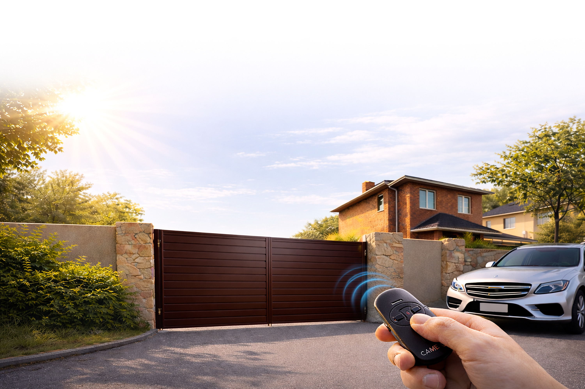
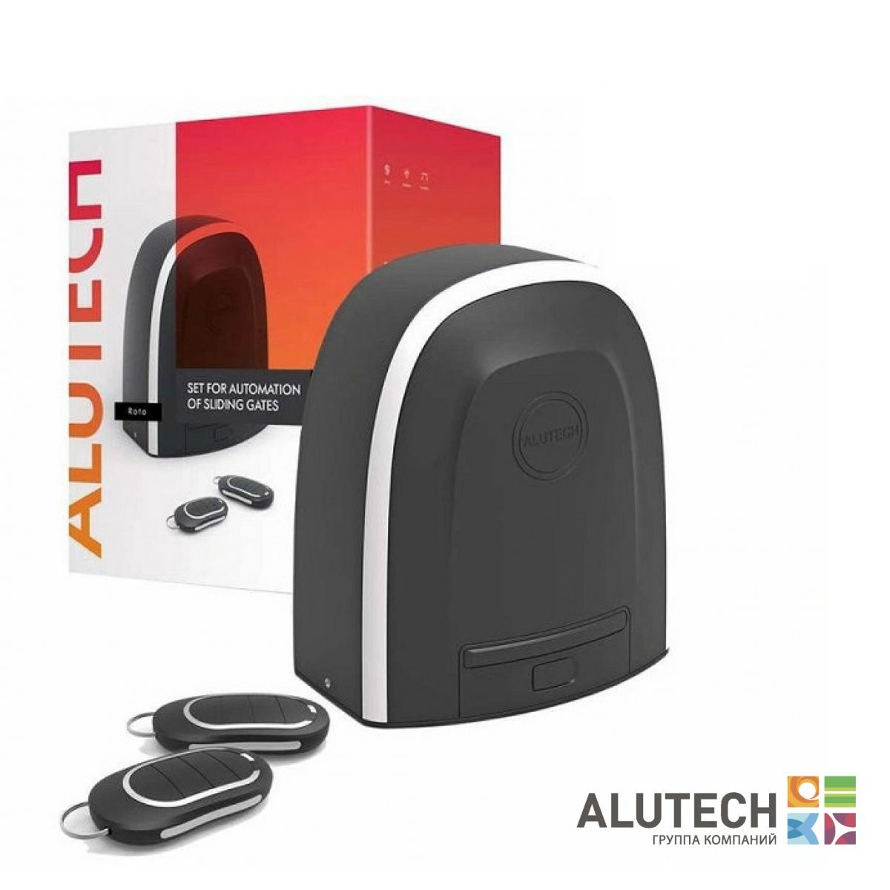
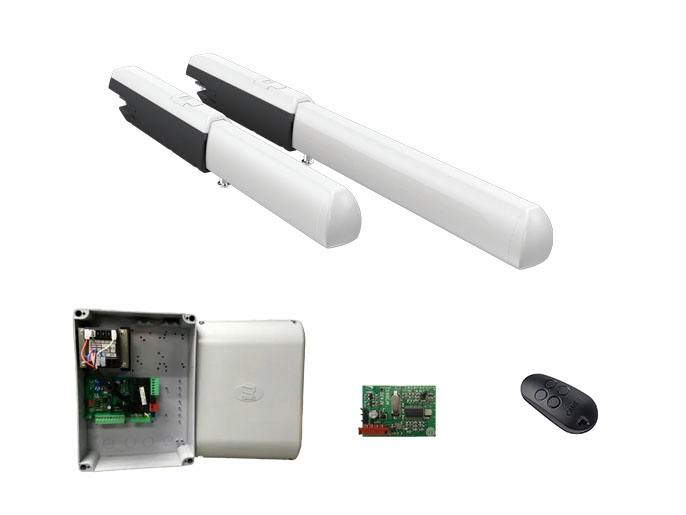
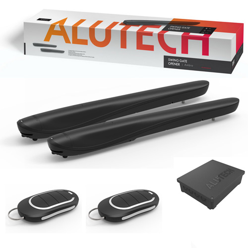

{kind=link}
{kind=link}
{kind=link}
{kind=link}
{kind=link}
{kind=link}
{kind=link}
{kind=link}
{kind=link}
{kind=link}
{kind=link}
{kind=link}
{kind=link}
{kind=link}
{kind=link}
{kind=link}
{kind=link}
{kind=link}
{kind=link}
{kind=link}
{kind=link}
{kind=link}
{kind=link}
{kind=link}
{kind=link}
{kind=link}
{kind=link}
{kind=link}
{kind=link}
{kind=link}
{kind=link}
{kind=link}
{kind=link}
{kind=link}
{kind=link}
{kind=link}
{kind=link}
{kind=link}
{kind=link}
{kind=link}
{kind=link}
{kind=link}
{kind=link}
Считаем вес ворот
Учитываем заполнение полотна, фурнитуру и зимнюю нагрузку.

Откатные ворота изготавливаются под конкретный проём, двигаются вдоль линии ограждения и не занимают место перед въездом. Решение удобно для дома, склада и коммерческого объекта.
Коротко о сроках, гарантиях и расчете стоимости
Стоимость зависит от размеров, заполнения, автоматики и комплекта фурнитуры. Рассчитаем под ключ.
Профнастил, металлический сайдинг, штакетник и жалюзи.
Сроки фиксируем в договоре. Обычно выполняем заказ в течение трёх недель, точные даты зависят от выбранной комплектации.
Гарантия на конструкцию — 1 год. На порошковую покраску — 6 месяцев. На автоматику — 2 года от завода-изготовителя.
Звоните или оставьте заявку — менеджер рассчитает стоимость под ключ.
Изготавливаем надежные каркасы откатных ворот, рассчитанные на долгий срок службы и стабильную эксплуатацию. Основа конструкции — прочная внешняя рама из профильной трубы, внутренняя обрешетка под дальнейшую обшивку и консольная часть с треугольным противовесом. Такое решение обеспечивает устойчивость створки, плавное открывание и закрывание, а также удобство в повседневном использовании.
Каркас можно обшить профнастилом, металлосайдингом, штакетником, жалюзи и другими материалами в зависимости от ваших задач и предпочтений.
Звоните или оставьте заявку — подберем каркас, фурнитуру и подготовим основу под нужную обшивку.
Распашные ворота - это классическая надежная конструкция из двух створок на петлях, закрепленных на опорных столбах. Створки из металлического каркаса с разным заполнением открываются внутрь или наружу участка, подходят для частных домов, дач, коммерческих и производственных объектов.
Изготавливаем распашные ворота по индивидуальным размерам проема, подбираем заполнение, цвет и вариант управления. По желанию можно предусмотреть калитку в едином стиле, автоматику и порошковую покраску, чтобы въездная группа выглядела аккуратно и работала без лишних доработок на объекте.
Звоните или оставьте заявку — менеджер рассчитает стоимость под ключ.
Каркас распашных ворот — надежное решение для дома, дачи или коммерческого объекта. Прочная металлическая конструкция выдерживает ежедневную эксплуатацию, устойчива к нагрузкам и подходит под различные варианты обшивки. Каркас изготавливается из качественной профильной трубы, что обеспечивает жесткость, долговечность и аккуратный внешний вид готовых ворот.
Изготавливаем каркасы распашных ворот по стандартным и индивидуальным размерам. При необходимости конструкцию подготавливаем под установку автоматики, замков и дополнительных элементов. Это удобный вариант для тех, кто хочет получить крепкие, практичные и долговечные ворота без лишних доработок на объекте.
Подберем размеры, подготовим каркас под нужную обшивку и сразу заложим конструкцию под автоматику и фурнитуру.
Металлическая калитка — это практичное и долговечное решение для организации удобного входа на участок. Конструкция из профильной трубы обладает высокой прочностью, устойчивостью к ежедневной эксплуатации и подходит для установки в составе забора, воротной группы или отдельного входа.
Изготавливаем калитки под частные, коммерческие и промышленные объекты с подбором заполнения, покрытия, замка, направления открывания и комплектации под монтаж.
Подберем калитку под проём, заполнение, покрытие и комплектацию, чтобы она выглядела в одном стиле с забором и воротной группой.
Забор из профнастила — один из самых популярных вариантов ограждения благодаря сочетанию прочности, доступной стоимости и простоты эксплуатации. Металлический каркас обеспечивает жесткость конструкции, а листы профнастила формируют надежное сплошное заполнение. Такой забор устойчив к погодным условиям, не требует сложного ухода и подходит для эксплуатации в любое время года.
Вертикальное заполнение — классический вариант монтажа профнастила. Подходит для большинства объектов, смотрится строго и аккуратно, обеспечивает хорошую жесткость конструкции.
Горизонтальное заполнение — современное решение с более стильным и выразительным внешним видом. Такой вариант часто выбирают для частных домов, современных коттеджей и коммерческих объектов, где важна не только защита территории, но и внешний вид ограждения.
Подберем цвет профнастила по каталогу RAL и согласуем покрытие под фасад, ворота и общий стиль участка.
Внимание! Текстура, рисунок и оттенок цвета на экране может отличаться от фактического из-за особенностей цветопередачи.
Подберем конструкцию, тип заполнения, высоту и цвет профнастила под ваш участок, после чего подготовим расчет с монтажом.
Забор из металлосайдинга — это прочное, современное и аккуратное ограждение для частного дома, дачи, коттеджа, коммерческого или производственного объекта. Такой забор сочетает в себе надежность металлической конструкции, эстетичный внешний вид и практичность в эксплуатации. Металлосайдинг хорошо защищает территорию от посторонних взглядов, устойчив к погодным условиям и долго сохраняет аккуратный внешний вид.
Вариант заполнения подбирается под внешний вид объекта и задачу: забор можно выполнить с горизонтальным, односторонним или двусторонним заполнением, а также оформить в едином стиле с воротами и калиткой.
Подберем оттенок и покрытие под забор из металлосайдинга, фасад дома, ворота и калитку.
Внимание! Текстура, рисунок и оттенок цвета на экране может отличаться от фактического из-за особенностей цветопередачи.
Подберем конструкцию, вариант заполнения, цвет и схему монтажа под ваш участок и подготовим расчет с установкой.
Забор из металлического штакетника — это практичное, аккуратное и современное решение для частного дома, дачи, коттеджа или коммерческого объекта. Такой забор сочетает надежность металлической конструкции, привлекательный внешний вид и возможность подобрать оптимальный вариант по высоте, цвету и типу заполнения. Металлический штакетник хорошо смотрится как в классическом, так и в современном стиле.
Конструкция устойчива к погодным условиям, не требует сложного ухода и подходит для длительной эксплуатации. Возможна установка в едином стиле с калиткой и воротами.
Подберем оттенок по RAL и фактуру под забор из металлоштакетника.
Внимание! Текстура, рисунок и оттенок цвета на экране может отличаться от фактического из-за особенностей цветопередачи.
Подберем высоту, вариант заполнения, шаг между планками и цвет покрытия, чтобы забор смотрелся аккуратно и в едином стиле с воротами и калиткой.
Забор жалюзи — это современное и практичное решение для частного дома, дачи, коттеджа или коммерческого объекта. Такой забор сочетает надежность металлической конструкции, аккуратный внешний вид и хорошую защиту участка. Особенность забора жалюзи — расположение ламелей под углом, благодаря чему сохраняется вентиляция, уменьшается парусность и участок частично закрывается от посторонних взглядов.
Заборы жалюзи хорошо подходят для современных домов, гармонично сочетаются с воротами и калиткой, а также могут изготавливаться по индивидуальным размерам и в разных цветах.
Подберем оттенок по RAL и фактуру под забор жалюзи.
Внимание! Текстура, рисунок и оттенок цвета на экране может отличаться от фактического из-за особенностей цветопередачи.
Подберем размеры, цвет и конструкцию забора жалюзи под ваш участок и подготовим расчет с монтажом.
Надёжные подъёмные ворота для частного гаража с тёплым полотном из сэндвич-панелей, плотным прилеганием по контуру и возможностью автоматизации потолочным приводом. Подходят для ежедневной эксплуатации, помогают сохранить тепло в помещении и не занимают место перед гаражом при открывании.
Подберём оттенок под фасад дома, кровлю или входную группу, чтобы ворота аккуратно вписывались в облик участка и не выбивались из общего вида.
Внимание! Оттенок на экране может отличаться от фактического цвета из-за особенностей цветопередачи.
Подберем серию DoorHan, рисунок панели, цвет и потолочный привод под размеры проема и режим ежедневной эксплуатации.
Рольворота (рулонные ворота) — это компактная система для защиты гаражей, въездов во дворы и торговых площадей. Они работают по принципу рольставней: гибкое полотно при открытии сворачивается в рулон, который прячется в защитный короб над проемом.
Подходят для гаражей, навесов, торговых павильонов и хозяйственных проемов. Монтаж можно выполнить внакладку снаружи, внутри помещения или непосредственно в проем, а по внешнему виду рольворота легко согласовать с калиткой и фасадом.
Подберем профиль, способ управления и размер полотна под ваш проем и режим использования.
Рольставни защищают окна, двери, витрины и технические проемы от постороннего доступа, пыли, яркого солнца и уличного шума. Полотно поднимается вверх и компактно уходит в короб, поэтому система не занимает место перед проемом.
Подберем профиль, короб и способ управления под частный дом, магазин или коммерческий объект: от ручного механизма до электропривода с выключателем или пультом.
Подберем тип профиля, способ управления и цвет под окна, двери, витрины или технические проемы.
Для откатных ворот важнее всего вес створки, запас мощности и состояние самой механики. Если ворота тяжелые, часто открываются или работают зимой, привод лучше брать с запасом.
Ниже мы собрали два понятных варианта: для частного дома и для более тяжелых ворот. Сначала смотрите на вес створки и условия работы, а затем уже на конкретную модель.
Учитываем заполнение полотна, фурнитуру и зимнюю нагрузку.
Для частных ворот обычно комфортен запас 30-50% по массе.
При необходимости включаем фотоэлементы, лампу и зубчатую рейку.
Начните с веса ворот и режима работы, а модель уже выбирайте внутри подходящего диапазона.
Оптимальный вариант для частного дома, когда нужен понятный и надежный комплект без лишнего запаса по мощности.

Выбор для более тяжелых створок, зимней эксплуатации и объектов, где нужен больший запас по нагрузке.

Поможем выбрать привод под вес створки, каркас и режим эксплуатации, чтобы автоматика работала спокойно и с запасом.
Для распашных ворот важны ширина и масса створки, геометрия столбов и направление открывания. Если эти размеры не учесть заранее, привод работает с лишней нагрузкой и быстрее изнашивается.
Ниже собраны готовые варианты для стандартных, усиленных и более универсальных задач. Сначала смотрите на створку и условия монтажа, потом уже на конкретную модель.
Смотрим ширину и массу каждой створки, а не только общий проем.
Учитываем столбы, направление открывания и место под привод.
Так автоматика спокойнее работает каждый день и дольше служит.
Сначала определите размеры створки и условия монтажа, а затем открывайте подходящий комплект.
Базовый комплект для частных распашных ворот стандартной ширины и обычного режима использования.

Подходит, когда створки крупнее, тяжелее или нужен больший запас по усилию и длине хода привода.

Практичный вариант для частных объектов, когда нужен готовый комплект с понятными характеристиками и запасом по размеру створки.

Подберем комплект под ширину и вес створки, геометрию столбов и направление открывания, чтобы автоматика работала без перегрузок.
Собрали в одном блоке механику откатной системы и аксессуары для автоматики: фотоэлементы, сигнальные лампы и пульты управления.
Комплектующие для откатных ворот — это набор основных элементов для плавной, надежной и долговечной работы воротной конструкции. Подбираются по ширине проема, весу створки и типу заполнения.
Фотоэлементы проводные Alutech LM-L для автоматики и шлагбаумов Alutech.
Сигнальная лампа Alutech SL-U универсальная со встроенной антенной и кронштейном крепления.
Пульт для автоматики и шлагбаумов Alutech AT-4N, рабочая частота 433 MHz, 4 канала и динамический код.
Поможем собрать комплект под вес полотна, тип каркаса и автоматику, а также подобрать фотоэлементы, лампу и пульты под ваш объект.
Металлические раздвижные решетки представляют собой эффективное и удобное решение для обеспечения безопасности окон, дверей и внутренних помещений. Они работают по принципу «гармошки» и в открытом состоянии занимают минимум места. Раздвижные решетки имеют встроенный замок, а также могут оснащаться проушинами под навесной замок. Порог решетки или его нижняя направляющая часть может быть откидной. Возможны два варианта установки конструкции: внаклад или в проем. Возможно окрашивание в различные цвета для соответствия дизайну помещения.
Поставка в регионы РФ. Доставка транспортной компанией. Возможна установка. Наши крупные заказчики: сеть салонов Билайн, Мегафон, МТС, Теле2. Сеть магазинов ДНС, множество банков и организаций, а также частные магазины.
Подберем размер, тип установки и цвет покрытия для магазина, офиса или частного объекта.
Ответим на вопросы и рассчитаем стоимость под ключ.
{kind=link}
{kind=link}
{kind=link}
{kind=link}
{kind=link}
{kind=link}
{kind=link}
{kind=link}
{kind=link}
{kind=link}